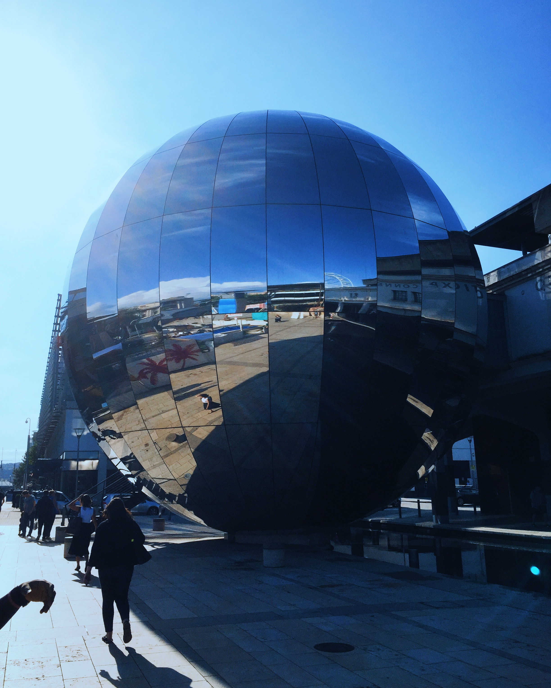

Home is the centre.
I live with Toro on the outskirts of Lagos, close enough to the city and far enough to breathe. Life here is made of faith, family, good food, conversation, and ordinary days worth noticing.
I am Tomi Abe. Human, believer, husband, builder, and strategist. This is where I keep the parts of life that shape the things I make.
Meet Tomi
A working life, held by a fuller one.
I grew up in Lagos in a Yoruba family from Osun State. Faith gave my life its first language. Marriage keeps me honest. Curiosity keeps opening new doors.
I work across design, technology, media, and research, but work is only one expression of what I care about. I am drawn to people, systems, stories, places, and the quiet decisions that change how we live.
I live with Toro on the outskirts of Lagos, close enough to the city and far enough to breathe. Life here is made of faith, family, good food, conversation, and ordinary days worth noticing.
I follow questions about culture, sustainability, technology, cities, systems, and the way people make meaning together.
I am still learning how to make better work, keep better company, and live with more intention.
Notes from the present tense. Small updates, useful links, and things I want to remember.
Right now I am spending time with Susinsight, practical AI tools, and the shape of a more intentional personal practice. I am also thinking about how culture carries knowledge across generations.
I have been thinking about the stories communities remember, teach, and carry. They shape what sustainable change can look like in real life.
Rebuilding Susinsight meant moving beyond patches and making room for a platform that can grow with the work and the people it serves.
Susinsight began with a conviction that African sustainability stories deserve greater depth, context, and care. That conviction has only grown.
This is not a portfolio. The work has homes built for it. These are the places to go when you want to understand the practice, the collaborations, and the ideas in motion.
My independent practice for turning complex systems into clear products, brands, stories, and useful experiences.
An independent consulting practice where research, data, and communication become decisions leaders can trust. Susinsight is one of the initiatives growing from this work.
Connection, meaning, and the deeper patterns of contemporary life.
Nigeria's past, present, and the forces shaping its future.
With Alex Akinyeye. Decoding the systems and design principles powering digital marketplaces worldwide.
Design, technology, faith, systems, and the everyday details in between.
A visual record of life, work, travel, texture, and the details that stay with me. One frame at a time.

A moving collection of photographs from the parts of life I want to remember. The frame changes every few seconds, but you can take your time.
I am open to thoughtful conversations, invitations to speak, mentoring, and making useful things with good people.